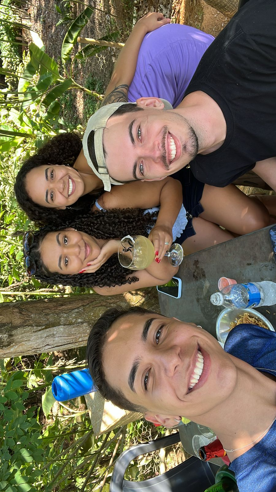

Após recuperação de momento trágico de desmaio de Daniel, o casal aprovitou o domingo em um pesque e pague com companhias leves e sem agulhas
O final de semana de Páscoa reservou momentos intensos para o casal. Na sexta-feira, dia 18, após desfrutarem das relaxantes águas quentes de Caldas Novas, um imprevisto mudaria os planos do casal: Daniel foi diagnosticado com pneumonia.
O dia seguinte trouxe ainda mais tensão quando, durante uma visita ao posto de saúde da cidade, Daniel teve um episódio de desmaio. Entre doses de dipirona e momentos de apreensão, o maior desafio foi enfrentar uma agulha - e não era uma agulha qualquer, era uma bem grande.
Felizmente, após sinais de melhora do paciente, o casal não deixou o contratempo abalar completamente o final de semana. Decidiram aproveitar o domingo em um ambiente descontraído: um pesque e pague. Na companhia das amigas Carol e Nath, o grupo desfrutou de momentos leves e risadas. Daniel, seguindo as recomendações médicas, manteve-se longe de qualquer bebida alcoólica, mas não economizou nos sorrisos.
O episódio, que inicialmente assustou a todos, transformou-se em mais uma história para o acervo do casal, provando que, mesmo nos momentos mais desafiadores, o amor e o bom humor prevalecem.